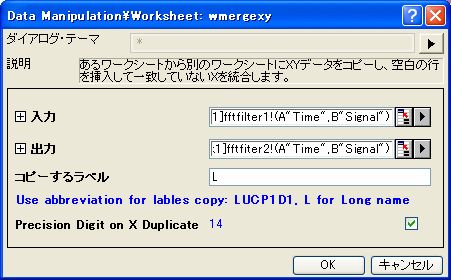
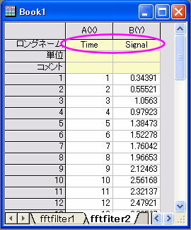

- 
- 
内容 |
あるワークシートから別のワークシートにXYデータをコピーし、空白の行を挿入して一致していないXを統合します。
Origin Version: 8.0 SR5
1. wmergexy iy:=(1,2) oy:=(3,4)
2. wmergexy iy:=sheet1!(1,2) oy:=sheet2!(1,2) label:=L
| 表示 名 |
変数 名 |
I/O と データ型 |
デフォルト 値 |
説明 |
|---|---|---|---|---|
| 入力 | iy |
入力 XYRange |
<unassigned> |
コピーするXY範囲を指定します。 |
| 出力 | oy |
入力/出力 XYRange |
<unassigned> |
データのコピー先を指定します。 |
| コピーするラベル | label |
入力 string |
|
どの列ラベルをコピーするかを指定します。これは、wks.Labelsと同じ表記です。例えば、label:=Lはロングネームをコピー、label:=LCはロングネームとコメントをコピーします。 |
このXファンクションは、X値に従ってXYデータを統合するのに使用します。
入力範囲の各行に対して、Xファンクションが出力範囲を見て、同じX値が存在しているかどうかをチェックします。同じX値が見つからない場合、この行を出力範囲にコピーします。同じX値が見つかった場合、出力範囲のX値に対応するY値をこの行のY値と置き換えます。
また、同時に入力範囲から出力範囲に行ラベルをコピーすることもできます。
2つのワークシートにXYデータがあり、1つのワークシート内にすべてのデータを組み合わせるものとします。データセットには、共通のX値が存在しないものとします。
以下のように、既にデータセットがOriginワークブックにあるものとします。
次のステップを実行して、組み合わせます。
2つのワークシートが組み合わさりました。また、ロングネームもコピーされています。